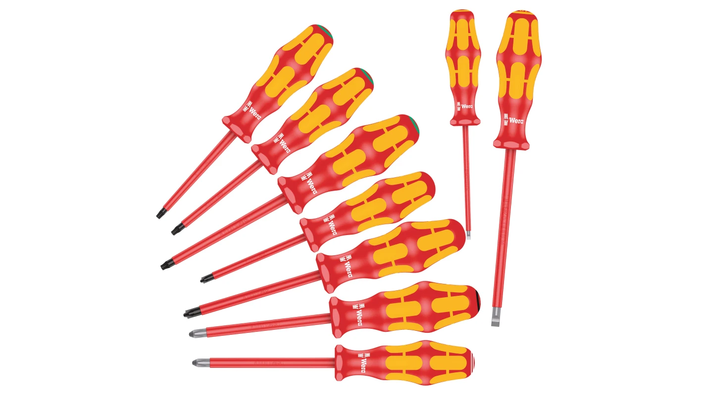
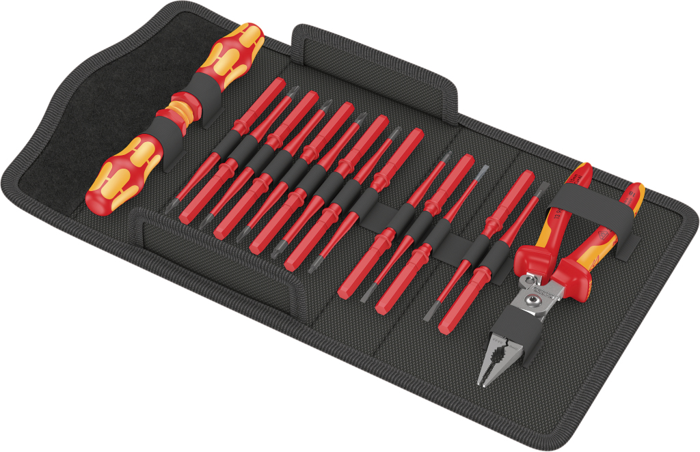

|  | Wera 9 darabos csavarhúzó készlet, VDE Miért ez a szerszám? Szigetelt pengék a biztonságos munkavégzéshez 1,000 V feszültségen Sima, kemény zónák a nagy sebességű forduláshoz, puha tapadási zónák a nagy nyomatékátvitel érdekében Vegye könnyű eszköz kereső: Színkódolás szerint profil és méret Hatszögletű gördülésgátló funkció az elgurulás ellen Lasertip hegyek a csavarfejbe való biztonságosabb illeszkedésér |
|
|  | Wera szigetelt csavarhúzó készlet Miért ez a szerszám? Szigetelt csavarhúzókészlettel, az IEC 60900 szabvány szerint. Egyedi vizsgálat 10,000 V-os vízfürdőben a biztonságos munkavégzés biztosítása érdekében, a megengedett 1,000 V-os feszültség mellett. Kraftform Plus fogantyú a kellemes, ergonomikus munkavégzéshez, ami a hólyagokat és a bőrkeményedést a múlté teszi. Kemény megfogási zónák a nagy üzemi fordulatszámokhoz, míg a puha zónák nagy nyomatékátvitelt biztosítanak. A hegy szó szerint belecsap a csavarfejbe, és megakadályozza a csúszást. |
|